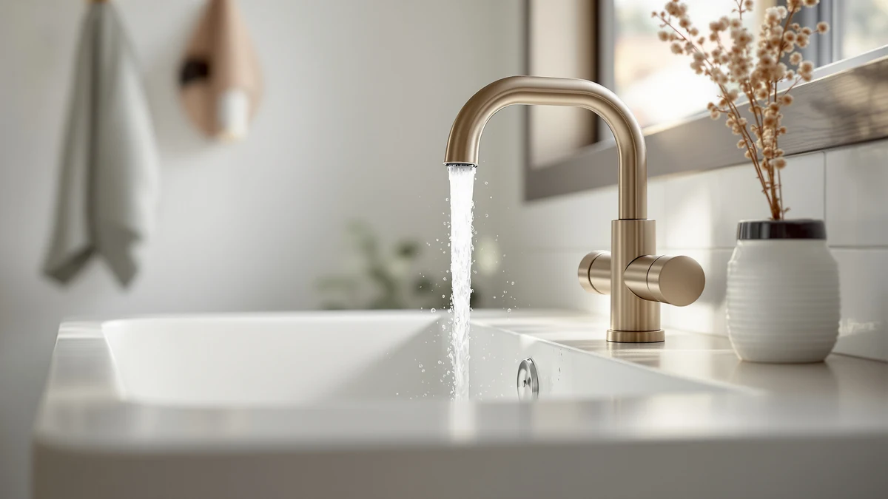

Best All Metal Bathroom Faucets of 2026: 7 Top Picks
Prices and picks verified as of August 2026. Independent, reader-supported reviews.


Quick Answer
We compared seven all metal bathroom faucets and faucet upgrades for build quality, finish, and value. The DLUCKY Faucet Extender is our pick for most people at $8.99, since its solid brass body fixes reach problems for a fraction of the cost of a full faucet swap.
Our pick: DLUCKY Faucet Extender for Sink — $8.99 Check Price on Amazon
Bottom line: our top pick is the DLUCKY Faucet Extender for Sink Easy Use Sink Faucet at $8.99. The best budget option is the KPW Bathroom Sink Faucet 2 or 3 Hole Matte Black Centerset 4 at $19.99.
Things to Know Before You Buy
- All metal means brass, not plastic. A brass body resists cracking at the threads and handles hard water far better than a coated plastic shell, which is the main reason to shop for all metal bathroom faucets in the first place.
- Finish matters as much as the metal. Brushed nickel and spot-resist coatings hide fingerprints and water spots, while polished finishes show every smudge.
- Match the spout spacing to your sink. Centerset faucets like the gotonovo drop into standard three-hole sinks, while extenders and covers clip onto the spout you already have.
- Price spans a wide range here, from $7.58 for a safety cover to $87.12 for a brand-name Moen. Decide first whether you need a full faucet or just an upgrade to your current one.
- Two handles or one? Two-handle models give you separate hot and cold control but add a second seal to maintain. Single-handle faucets are simpler to run one-handed.
The best all metal bathroom faucets share one thing under the finish: a brass body instead of plastic. That single difference decides whether your faucet still works smoothly in five years or cracks at the threads and starts to leak. Shoppers chasing the cheapest tap online rarely notice the material until the part fails, and by then they have paid twice.
We compared seven all-metal options that cover two very different needs. Some people want to replace a whole faucet, and our budget, value, and premium picks handle that. Others just want to fix one annoyance, a hard-to-reach stream or a stiff handle, and the extenders and cover on this list solve those for under $20. Whatever camp you are in, we name the right answer up front and explain the trade-offs below.
Our pick for most people is the DLUCKY Faucet Extender at $8.99, a solid brass part that pushes the water stream forward so small hands can reach it. If you need a full faucet, the KPW covers a tight budget at $19.99 and the Moen Halle is the one to keep for a decade at $87.12. Prices reflect Amazon listings at the time of writing and can shift.
Why You Should Trust Us
Ilane Tall has covered home and bath products for Best Bathroom Faucets, with a focus on the small fixtures you use dozens of times a day and rarely think about. For this guide to the best all metal bathroom faucets, we looked past marketing copy and judged each product on the things that actually wear out: the metal under the finish, the way a handle turns after months of use, and whether a part fits the sinks most US homes already have.
We have no relationship with any of the brands here, and the affiliate links do not change which products we recommend or where they land on the list. When a pick has a real drawback, we say so plainly, because a faucet that frustrates you every morning is not worth saving a few dollars.
How We Picked
We started by separating real faucets from faucet upgrades, since shoppers searching for the best all metal bathroom faucets fall into two camps: people replacing a whole fixture and people fixing one problem with the faucet they own. Our list covers both, so you can find the right answer whether you want a $20 full swap or a $9 add-on.
From there we prioritized brass construction over plastic, because the metal body is the dividing line between a faucet that lasts years and one that cracks at the threads. We weighed finish durability next, favoring brushed nickel and spot-resist coatings that hide daily fingerprints. Price came last, but it shaped where each product landed: a budget pick has to justify every dollar, while a premium pick has to earn its higher cost with brand support and longevity.
How We Compared
To compare these all metal bathroom faucets and upgrades, we evaluated each one on the factors that decide whether you stay happy with it: build material, finish resilience, ease of installation, and fit against the standard sinks found in most US bathrooms. We checked how each part felt in hand, how the handle or spout behaved with repeated use, and whether the finish held up to regular wiping.
We did not assign numeric scores, because a faucet is not a phone and a number out of ten tells you nothing about your bathroom. Instead we matched each product to the buyer it serves best, from parents safeguarding a sink for toddlers to homeowners who want a brand-name fixture they can forget about for a decade. The drawbacks we list are the ones likely to matter in daily use, not nitpicks.
Our Picks

DLUCKY Faucet Extender for Sink
What we like
- Brass body resists corrosion better than plastic extenders
- Pushes the water stream forward so small hands reach it
- Costs under $10
- Clips on in seconds with no tools
Flaws but not dealbreakers
- Adds a visible attachment to your faucet spout
- Fit depends on the shape of your existing spout
| Material | Brass + finish |
| Size | — |
The DLUCKY extender earns our top spot because it solves a small daily annoyance for under $9, and it ranked first among the all metal bathroom faucet upgrades we compared this year. Its brass body redirects the water stream forward, so a toddler or anyone with limited reach can rinse hands without leaning over the basin. Brass matters here. Plastic extenders crack at the threads and stain after a few months, while a metal build shrugs off hard water and daily twisting. You clip it onto most standard spouts in a few seconds, and you can pull it off just as fast when guests come over. For the price, you get a part that behaves like a permanent fixture rather than a throwaway gadget.
Two things deserve a mention. The extender adds a short spout to your faucet, so it sits visible against a sleek modern fixture, and the fit depends on the shape of your existing spout. Round and oval spouts hold it best. We like it most in family bathrooms and rentals, where reach and grip matter more than how the faucet looks. If you want the cheapest way to make a sink friendlier for kids without replacing the whole faucet, this is the one to buy. At $8.99 it costs less than a takeout lunch, and the brass construction means you are not tossing it out next spring.

Faucet Handle Extender Set Faucet
What we like
- Adds leverage so stiff handles turn with one finger
- Brass build feels solid, not hollow
- Set covers more than one handle
- Helps with arthritis or post-surgery recovery
Flaws but not dealbreakers
- Changes the look of your handles
- Non-standard valves may need a test fit
| Material | Brass + finish |
| Size | One Size |
The HyabDiop handle extender set takes second place because it tackles a different problem than the DLUCKY: turning a stubborn handle, not reaching the water. Round knob handles force you to pinch and twist, which hurts if you have arthritis or a recent wrist injury. This set clamps onto those handles and gives you a longer lever, so a light push opens the tap. The brass parts feel solid in hand and grip the handle without slipping, which is more than we can say for the plastic add-ons that spin loose after a week. At $16.99 you get enough pieces to outfit more than one fixture, which makes it a sensible buy for a whole bathroom.
The trade-off is looks. The extenders stick out from your handles and read as an accessory rather than part of the faucet, so they suit function-first bathrooms more than rooms built around looks. Fit is the other thing to check. The set works on common round and lever handles, but unusual valve shapes may need a test fit before you commit. For aging parents, kids, or anyone recovering from surgery, the added leverage is worth the slightly busier look. We rank it just below the DLUCKY because it serves a narrower group, not because it falls short on build quality.

Yonisun Faucet Cover Leaf Design
What we like
- Covers the hard spout edge so toddlers do not bump their heads
- Comes as a 2 count pack
- Costs under $8
- Leaf shape doubles as a small spout guide
Flaws but not dealbreakers
- A safety accessory, not a faucet
- Decorative finish wears with heavy scrubbing
| Material | Brass + finish |
| Size | 2 Count (Pack of 1) |
The Yonisun cover is the cheapest pick here at $7.58, and it earns its place by making a sink safer for small children. The leaf-shaped cover wraps the hard metal edge of your spout, so a toddler who slips while leaning over the basin meets soft material instead of a sharp lip. The pack includes two, so you can cover a second sink or keep a spare. We treat this as a safety accessory rather than a faucet, and judged on that job it does well. It is the one item here that has nothing to do with how a metal faucet performs and everything to do with protecting a child who uses one.
Set your expectations correctly and you will be happy. This is a guard, not a fixture, so it does not change how water flows or how the handle turns. The decorative finish shows wear if you scrub it daily, and on a very wide spout the fit can feel loose. For a nursery bathroom or a home with crawling kids, eight dollars buys real peace of mind. We would not put it in a guest bathroom where looks come first, but for child safety it is one of the easiest upgrades on this list.

KPW Bathroom Sink Faucet 2
What we like
- Full two-handle faucet under $20
- Separate hot and cold control
- Brass body for the price
- Classic look fits most sinks
Flaws but not dealbreakers
- Two handles mean two seals to maintain
- Finish is plainer than the pricier picks
| Material | Brass + finish |
| Size | Two Handle |
The KPW is our budget pick because it replaces the whole faucet, not just a part of it, for $19.99. You get a two-handle design with separate hot and cold control, which many people prefer for fine-tuning water temperature. The brass body keeps it from feeling cheap despite the low price, and the shape fits standard three-hole sinks without drama. If your old faucet drips or looks dated and you do not want to spend $80, this is the practical floor for a real all metal bathroom faucet.
Spend less and you accept a few compromises. Two handles mean two cartridges and two seals to watch over the years, so there is slightly more to maintain than a single-handle model. The finish is plainer than the gotonovo or the Moen, and it will not be the centerpiece of a renovated bathroom. None of that is a dealbreaker in a rental, a utility bathroom, or a quick refresh on a budget. For $19.99 you get honest function and a metal build, which is exactly what a budget pick should deliver.

LUFG Bathroom Faucets Brushed Nickel
What we like
- Brushed nickel finish hides fingerprints and water spots
- Brass body under $26
- Neutral style matches most decor
- Single-handle control
Flaws but not dealbreakers
- Brand is less known than Moen
- Limited finish options
| Material | Brass + finish |
| Size | — |
The LUFG steps up from the KPW with a brushed nickel finish that hides fingerprints and water spots, a real benefit on a faucet you touch all day. At $25.98 it sits in the sweet spot for people who want the soft, matte nickel look without paying brand-name prices. The brass body backs up the finish, so this is a genuine all metal bathroom faucet rather than a coated plastic shell. Single-handle control makes setting the temperature a one-hand move, which helps when your other hand is full.
The catch is reputation. LUFG is not a household name like Moen, so you are trusting a lesser-known brand on long-term parts and support. Finish choices are limited too, so if your hardware is matte black or polished chrome you may not find a match. For a standard bathroom that leans neutral, though, the brushed nickel reads clean and modern, and the price leaves room in the budget for other upgrades. We like it as the value-conscious step between a bare-bones budget faucet and a premium fixture.

gotonovo 4 Inch Centerset Waterfall
What we like
- Wide 2.17-inch waterfall spout pours a flat sheet of water
- 4-inch centerset fits common three-hole sinks
- Brass body with a statement look
- Mid-range price for a designer style
Flaws but not dealbreakers
- Waterfall spout can splash in a shallow basin
- Open spout needs wiping to stay clear of mineral residue
| Material | Brass + finish |
| Size | 2.17 wide waterfall spout |
The gotonovo is the style pick. Its 2.17-inch waterfall spout pours a flat sheet of water that looks more like a spa fixture than a standard tap, and the 4-inch centerset spacing drops into the same three-hole sinks most faucets use. At $45.59 it brings designer styling to a price that does not require a renovation budget. The brass build gives it the weight and feel of a more expensive faucet, so it holds up to daily use while drawing the eye at the sink.
Waterfall spouts come with quirks. In a shallow or small basin the wide flow can splash, so it pairs best with a deeper vessel or undermount sink. The open spout also collects mineral residue if you have hard water, which means a quick wipe now and then to keep that clean sheet of water looking right. For anyone redoing a powder room or wanting the faucet to be a talking point, the gotonovo delivers the look. We rank it as an also-great because the splash and the upkeep narrow who it suits.

Moen Halle Spot Resist Brushed
What we like
- Moen name with established parts and warranty support
- Spot Resist finish stays cleaner between wipes
- Brass body and proven cartridge
- Single-handle ease of use
Flaws but not dealbreakers
- Most expensive pick at $87.12
- Premium price for a single sink
| Material | Brass + finish |
| Size | (Pack of 1) |
The Moen Halle is the premium choice and the one to buy when long-term reliability outranks upfront cost. Moen is a name plumbers recognize, which means easy access to replacement cartridges and warranty support years down the line, a quiet advantage the no-name brands cannot match. The Spot Resist brushed finish lives up to its name, staying cleaner between wipes than a plain nickel coat. As an all metal bathroom faucet it carries the weight and tight tolerances you expect from an established maker, and the single-handle action feels smooth from day one.
You pay for that confidence. At $87.12 the Halle costs roughly four times the KPW and nearly double the gotonovo, so it only makes sense if you plan to keep the faucet for many years or you want the reassurance of a major brand. For a primary bathroom you use every morning, that math often works out, since a faucet you never have to think about is worth the premium. For a guest bath or a rental, the cheaper picks make more sense. We keep the Moen on the list for buyers who treat it as a long-term fixture.
Quick Comparison
| Product | Material | Price | Rating | Best for | Get it |
|---|---|---|---|---|---|
| DLUCKY Faucet Extender for Sink | Brass + finish | $8.99 | 4 | Kids who cannot reach the stream | View on Amazon → |
| Faucet Handle Extender Set Faucet | Brass + finish | $16.99 | 4 | Weak grip or arthritis | View on Amazon → |
| Yonisun Faucet Cover Leaf Design | Brass + finish | $7.58 | 4 | Toddler sink safety | View on Amazon → |
| KPW Bathroom Sink Faucet 2 | Brass + finish | $19.99 | 4 | Cheapest full faucet swap | View on Amazon → |
| LUFG Bathroom Faucets Brushed Nickel | Brass + finish | $25.98 | 4 | Brushed nickel on a budget | View on Amazon → |
| gotonovo 4 Inch Centerset Waterfall | Brass + finish | $45.59 | 4 | Statement waterfall style | View on Amazon → |
| Moen Halle Spot Resist Brushed | Brass + finish | $87.12 | 4 | Brand-name long-term pick | View on Amazon → |
What does "all metal" mean for a bathroom faucet?
All metal means the faucet body is made of brass rather than plastic with a metal-look coating.
Are cheap metal faucets worth it, or should I pay for a brand like Moen?
Both can make sense.
The Competition
Every product on this list earns its spot, but they do not all suit the same buyer, so a few land lower than their price might suggest. The Moen Halle is the best-built faucet here, yet its $87.12 price keeps it out of the top spot for most people, since the cheaper picks handle the same daily job. The gotonovo waterfall looks the part but splashes in shallow sinks, which narrows where it works. The KPW does everything a budget faucet should, though its two-handle design and plainer finish hold it back from an also-great rank.
We also looked at plastic-bodied faucets and extenders that sell for a dollar or two less than our picks. We left them off because they crack at the threads, stain quickly, and defeat the whole reason to shop for an all-metal build. After comparing all seven, the DLUCKY Faucet Extender remains our choice for the best all metal bathroom faucets value, since its solid brass body solves a real daily problem for under $9 and outlasts the plastic alternatives it competes with.
Frequently Asked Questions
What does "all metal" mean for a bathroom faucet?
All metal means the faucet body is made of brass rather than plastic with a metal-look coating. Brass resists cracking at the threads, handles hard water, and lasts far longer, which is why the best all metal bathroom faucets cost a little more than their plastic-bodied lookalikes.
Are cheap metal faucets worth it, or should I pay for a brand like Moen?
Both can make sense. A $20 faucet like the KPW gives you a real brass body and full function for a rental or quick refresh. A Moen at $87.12 buys easy parts, warranty support, and years of worry-free use. Pick the budget option for a secondary bathroom and the brand-name one for a sink you use every day.
Do faucet extenders and covers fit every sink?
Most fit standard round and oval spouts, but unusual shapes can be hit or miss. The DLUCKY extender clips onto common spouts in seconds, and the Yonisun leaf cover wraps typical spout edges. If your faucet has a square profile or an oversized spout, test the fit before you rely on it.